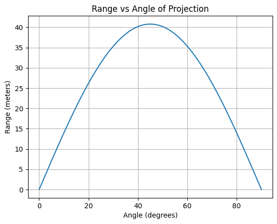
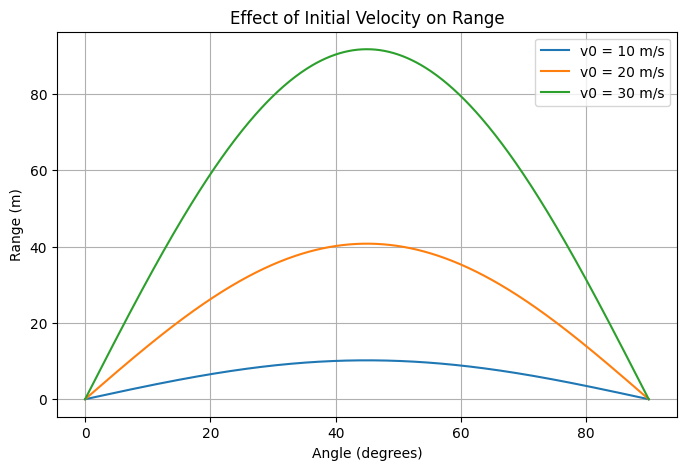
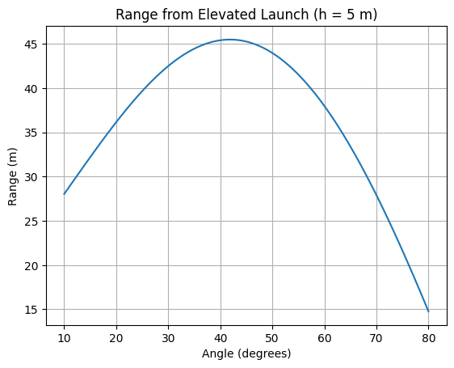

Problem 1
Əla! İndi hər 4 alt tapşırığı da istədiyin kimi – bağlı başlıq, riyazi formul, Python kodu, və ingilis izahı ilə ardıcıllıqla verirəm.
Task 1: Theoretical Foundation
Mathematical Formulation:
Projectile motion equations without air resistance and with launch height \(h = 0\):
Range is when \(y(t) = 0\) (excluding \(t = 0\)):
Python Code:
import numpy as np
import matplotlib.pyplot as plt
v0 = 20 # m/s
g = 9.81 # m/s^2
angles_deg = np.linspace(0, 90, 500)
angles_rad = np.radians(angles_deg)
ranges = (v0**2) * np.sin(2 * angles_rad) / g
plt.plot(angles_deg, ranges)
plt.xlabel('Angle (degrees)')
plt.ylabel('Range (meters)')
plt.title('Range vs Angle of Projection')
plt.grid(True)
plt.show()

Explanation:
We derived the formula for projectile range as a function of angle. The range is maximum at 45°, and varies with \(\sin(2\theta)\).
Task 2: Analysis of the Range
Mathematical Formulation:
Range formula:
- Increasing \(v_0\) increases range quadratically.
- Increasing \(g\) decreases range.
- Maximum at \(\theta = 45^\circ\). 
Python Code:
def compute_range(v0, g=9.81):
angles = np.radians(np.linspace(0, 90, 500))
return (v0**2 * np.sin(2 * angles)) / g
plt.figure(figsize=(8,5))
for v in [10, 20, 30]:
plt.plot(np.linspace(0, 90, 500), compute_range(v), label=f'v0 = {v} m/s')
plt.xlabel('Angle (degrees)')
plt.ylabel('Range (m)')
plt.title('Effect of Initial Velocity on Range')
plt.legend()
plt.grid(True)
plt.show()
Explanation:
This code compares how initial velocity affects projectile range. A higher \(v_0\) produces a much longer range. The angle for max range stays at 45° regardless of \(v_0\).
Task 3: Practical Applications
Mathematical Formulation:
If projectile is launched from height \(h > 0\):
Solving \(y(t) = 0\) gives time of flight \(t_f\), then:
No analytical formula; use numerical root-finding. 
Python Code:
from scipy.optimize import fsolve
def time_of_flight(theta, v0, h, g=9.81):
def height_eq(t): return v0*np.sin(theta)*t - 0.5*g*t**2 + h
t_guess = 2*v0*np.sin(theta)/g
t_flight = fsolve(height_eq, t_guess)[0]
return t_flight
angles = np.radians(np.linspace(10, 80, 100))
v0 = 20
h = 5
ranges = []
for theta in angles:
t_f = time_of_flight(theta, v0, h)
R = v0 * np.cos(theta) * t_f
ranges.append(R)
plt.plot(np.degrees(angles), ranges)
plt.xlabel('Angle (degrees)')
plt.ylabel('Range (m)')
plt.title('Range from Elevated Launch (h = 5 m)')
plt.grid(True)
plt.show()
Explanation:
We simulate launching from a height (e.g., a cliff). The range is longer than from ground-level. This models real-world scenarios like artillery or cliff jumps.
Task 4: Implementation
Mathematical Formulation:
Simulate full 2D projectile path with:
Terminate when \(y(t) \leq 0\).
Python Code:
def simulate_trajectory(v0, theta_deg, g=9.81):
theta = np.radians(theta_deg)
t_flight = 2 * v0 * np.sin(theta) / g
t = np.linspace(0, t_flight, 300)
x = v0 * np.cos(theta) * t
y = v0 * np.sin(theta) * t - 0.5 * g * t**2
return x, y
plt.figure(figsize=(8,5))
for angle in [30, 45, 60]:
x, y = simulate_trajectory(20, angle)
plt.plot(x, y, label=f'{angle}°')
plt.xlabel('Horizontal Distance (m)')
plt.ylabel('Vertical Height (m)')
plt.title('Projectile Trajectories for Different Angles')
plt.legend()
plt.grid(True)
plt.show()

Explanation:
This visualizes full projectile paths for multiple angles. It shows how different launch angles affect both the height and the range of the trajectory.